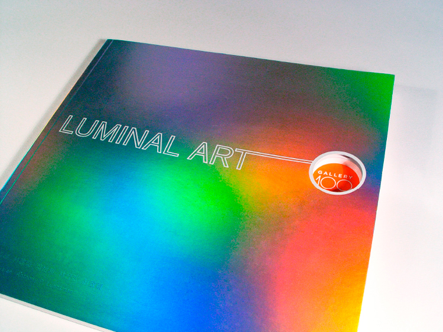
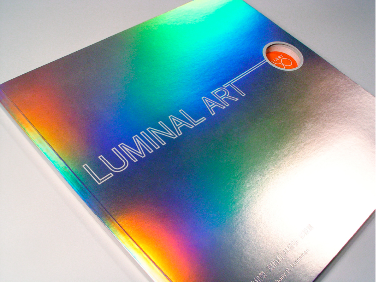
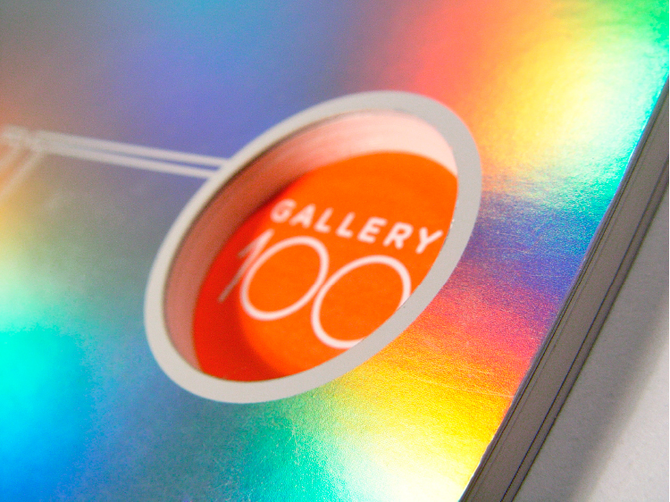
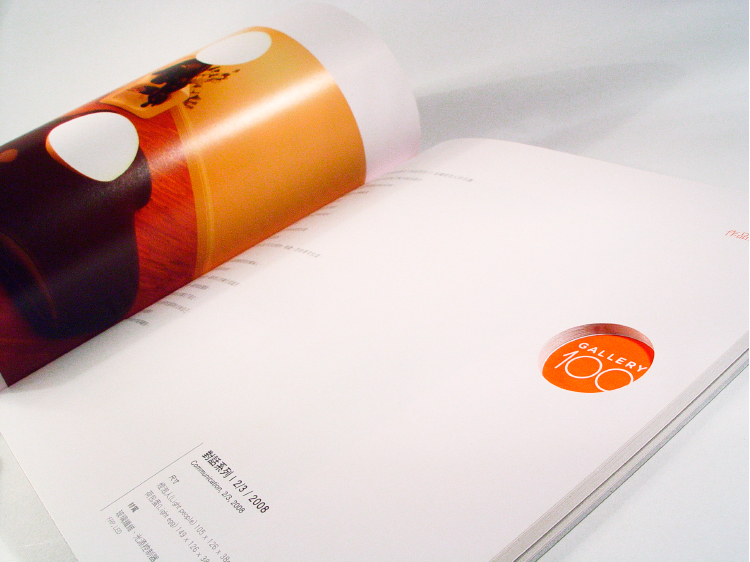
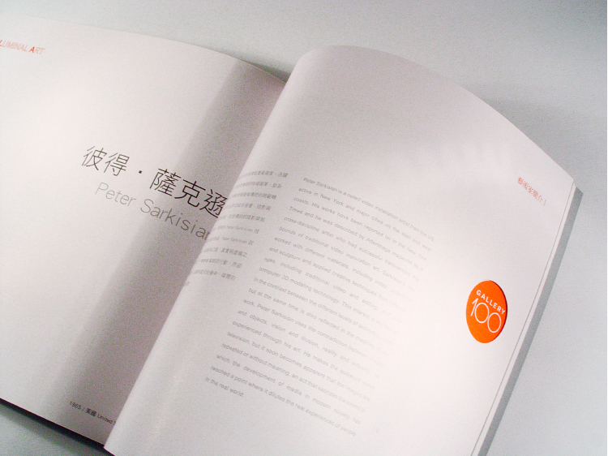
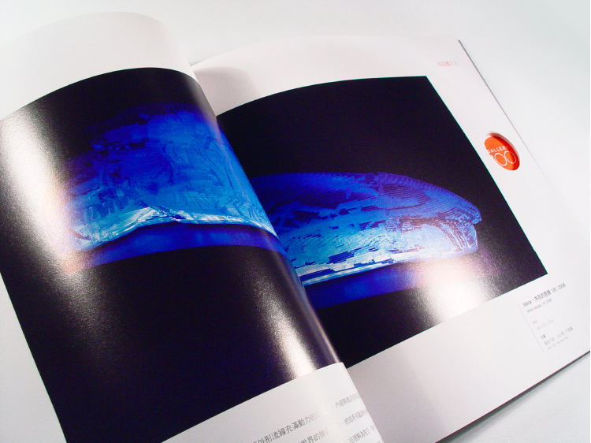
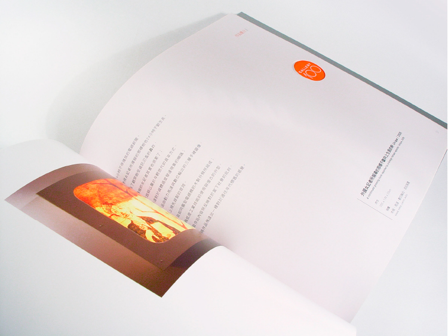
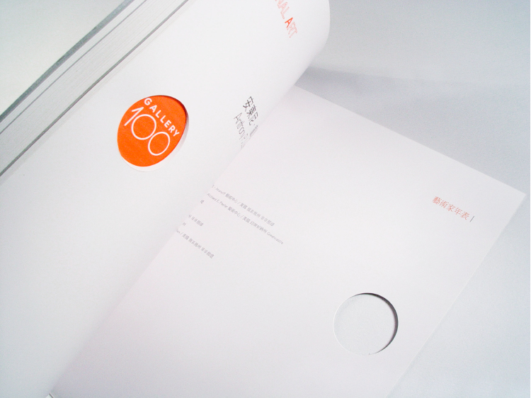
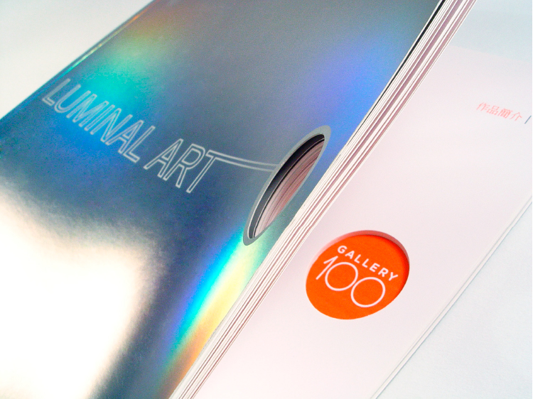

GALLERY 100 LUMINAL ART CATALOGUE
佰藝畫廊 展覽型錄設計
藝術家以光為主題，製作出一系列的藝術創作，型錄設計上，我們也運用了材質能夠凸顯「光」的材質：鏡銅紙作為封面，再利用打凸效果，來呈現文字。
設計上我們嘗試了一個大膽的方式：在整本書的LOGO處挖洞，並保留呈現LOGO那一頁，讓整本書的視覺焦點可以集中在該處。
為了呈現這樣的想法，我們利用手工割圓，而非機器，這是因書本太厚，機器擠壓會造成紙張燒焦，但我為了能夠忠實呈現想法，改以人工一本一本割，雖然非常耗時，但成果確實非常令人驚艷。
伯納設計秉持著對設計的喜愛和熱忱，強烈的好奇心讓我們在提出LOGO設計推薦方案時，能夠兼具創意與設計感，希望藉此幫助品牌建立更好吸引人的視覺。
SHARE ON








